BRANDING & WEB DESIGN
Axis
Background
Axis is a 501(c)3 non-profit ministry that helps students think clearly and critically about technology, culture, and faith. I’ve been on staff at Axis for nearly 3½ years as first a designer and now as the Creative Director. During this time period our branding has stayed virtually the same. 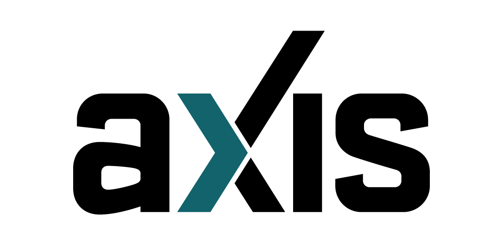
Old Logo
Existing Brand
The current identity was designed in 2009 by a third-party. The objective was to create a mark that felt relevant and “edgy” for teenagers, but also maintained a level of professionalism and trustworthiness to appeal to decision makers (parents, school admins, pastors). Aesthetically, it comes off as serious and cold. The sharp angles of the typeface, Stratum2, give it a feeling of aloofness, and the colors, Black and Teal, are flat and unimaginative.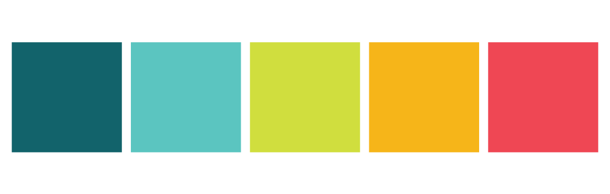Old Color Palette
In 2012, four new colors were introduced into the branding (Light Blue, Moss Green, Medium Orange, Medium Red). They were bright and youthful as a way to counter the seriousness of the dark Black and Teal and sharp angles of Stratum2, as well as a way to help capture student’s attention in a better way.
Challenges
Fast-forward to present-day and Axis is drastically different. We’re not the same organization we were when the previous brand was designed. We’ve grown up; and the brand identity was struggling to keep pace. I came to a consensus that our identity was due for an overhaul, so I began to plan out what it would take to make that happen.
These were the objectives:
1. The new identity needed to be evolutionary, not revolutionary. After nearly 10 years of serving students, we began to achieve brand recognition and traction. Completely changing our look would alienate our customers.
2. We needed to soften our appearance. Our old identity was so stiff and distant, and as a whole, I didn’t feel like that truly represented our organization. Our method of reaching students is approachable and understanding, and the new identity needed to reflect that.
3. The new branding needed to show organizational maturity. We weren’t as scrappy and raw as when we first started. We needed an identity that proved we should be taken seriously in our space as an organization.
4. We needed branding that did a better job of appealing to both students and decision makers at the same time. The existing brand attempted this, but I think it ultimately missed the mark. This is a difficult task to have, since both groups seemed to contradict each other, but I still thought it was possible to create a solution that could serve both audiences.
Process
Since I knew that the brand needed to be refreshed instead of redesigned, I determined that the new mark should be structurally similar to the old mark. By deciding on this, I was able to bypass my normal process of sketching out new concepts first, and could move on to creating new typographic and color standards instead.
Typography
Stratum2 was the foundation of the existing brand. The logo used a modified version of it, and it was used as headline and body copy on all web/printed marketing as well as all of our internal documents. It was literally everywhere.
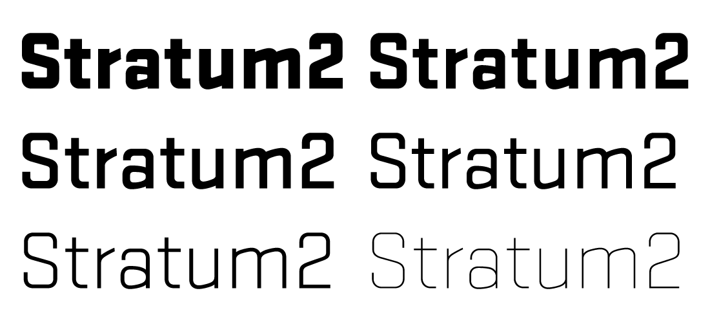Old Typeface
One of the main problems with the typeface, was that it’s personality did not align with Axis’ core brand/messaging. So, one of my first tasks was finding typeface(s) that could better represent our brand values.
In the end, I decided upon using 2 different typefaces to help accomplish this goal. Raleway, a sans-serif, and Merriweather, a screen-focused serif typeface. Raleway captures a great sense of friendliness. It isn’t as rigid and serious as other geometric sans-serifs like Gotham or Futura. Merriweather helps bring a sense of maturity to the brand, but isn’t drab and “corporate-y” as other serifs.
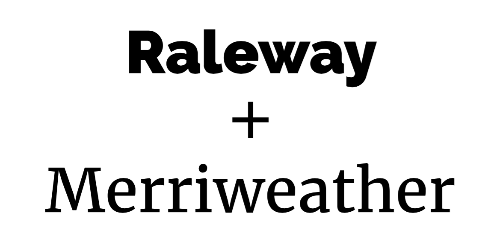New Typefaces
They are designed to work in tandem, with Raleway taking on headings and subheadings, and Merriweather tackling body copy, but they both proved to have a lot of flexibility, so they are able to trade roles when appropriate. 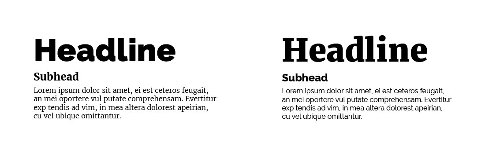Example Typography
Color
This was the harder of the 2 tasks, because this is where the grunt work of appealing to students and decision makers would happen. The new palette needed to be youthful, yet mature; playful, yet respectable. I chose a variation of a split complementary scheme which more closely resembled an analogous palette with a complementary color. 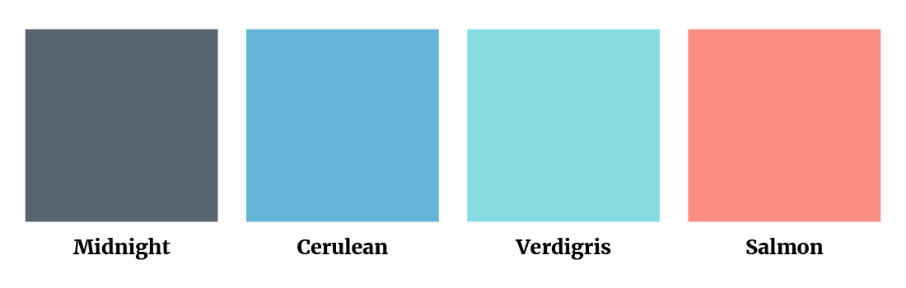New Color Palette
The analogous colors contain a range of 3 colors, containing: “Midnight” a slate gray/purple, “Cerulean” a medium blue, and “Verdigris” a tropical light green/blue. While “Cerulean” and “Verdigris” are bright and youthful colors, both of them (along with “Midnight”) reside on the cool side of the color wheel, which helps give them a sense of maturity that I was looking for. The complementary color, “Salmon”, is an orange-red that sits on the warm side of the wheel. Although being red, it isn’t too intense, but instead gives the palette a nice sliver of warmth to round out the whole family.
The final product is a palette that feels relaxed and welcoming. It’s mature, but never boring. It’s bright, but never overwhelming.
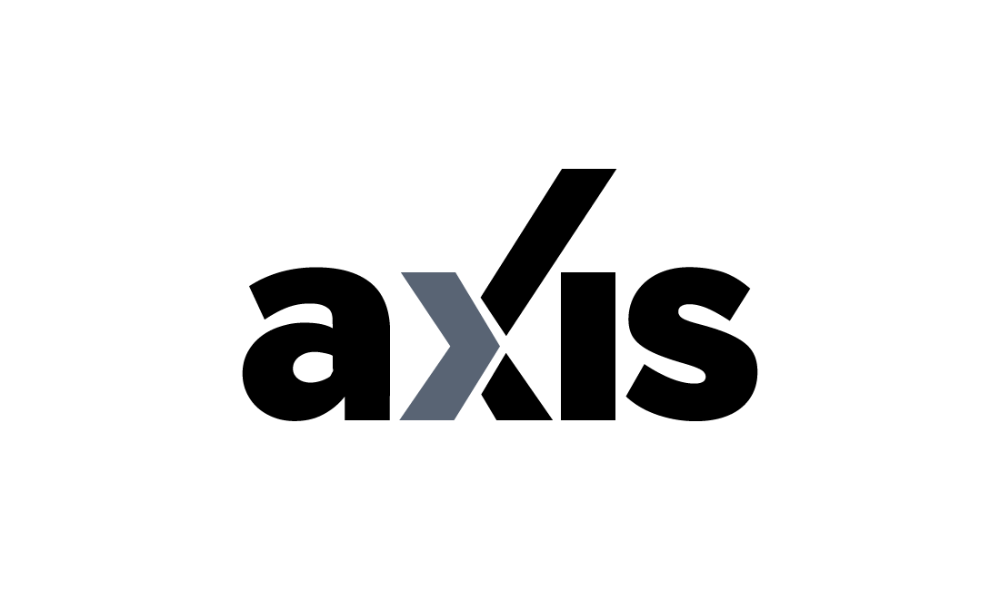Final Logo
Mark/Logo
The actual mark/logo was the last piece of the branding that was designed. This was where the new typefaces and colors would marry together. By allowing the ideas of maturity and youthfulness to complement each other instead of fight each other, the mark was able to do the job the original branding failed to do: appeal to students and decision makers at the same time.
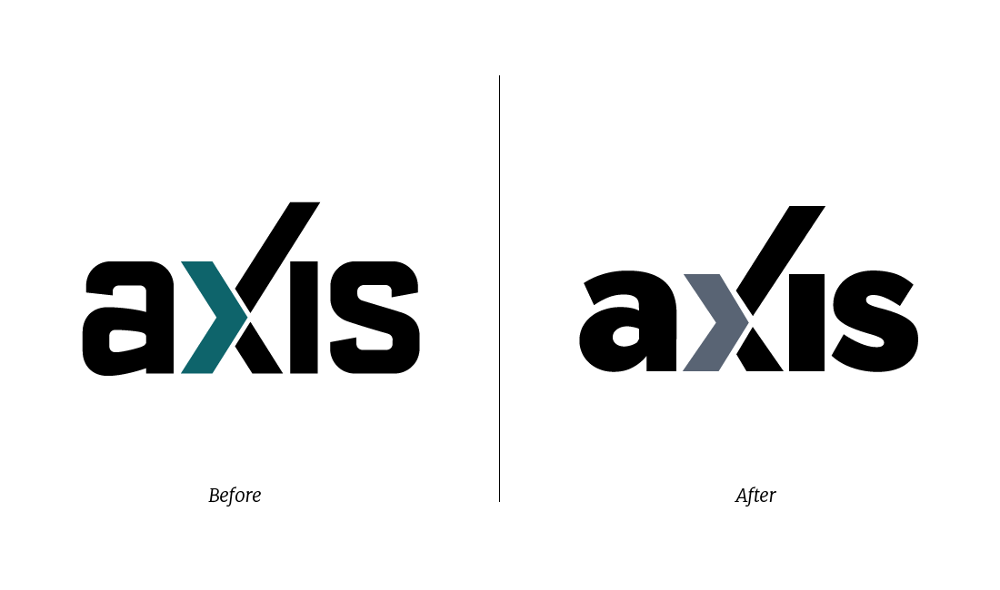Side-by-side Comparison
While nothing structurally is drastically different, (it pays homage to the old mark by retaining the extended arm of the “x” and the detached chevron) the entire vibe and feeling is. By leaning into the friendliness of “Raleway,” I was able to capture the sense of approachability and softness that was previously lacking. 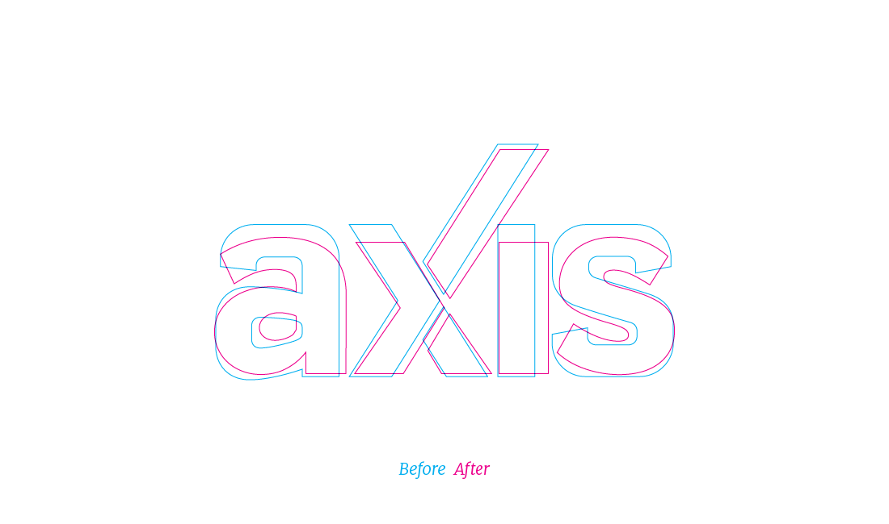Outline Comparison
The lowercase “a” is what really helps set it up with the “friendliness” feel. The bowl’s soft roundness is a great lead-in for the eye. The increased tightness of tracking dispels the feeling of distance/aloofness. The lower center of gravity gives it a more relaxed appearance.
Once you start mixing in the new color palette, the whole thing really starts to come together.
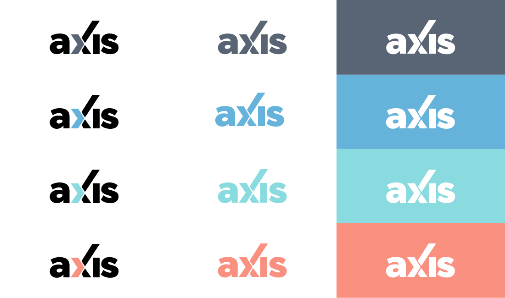New Logo With Entire Color Palette
Supporting Elements
By using this new toolkit of type and color. It was easy for me to start applying it to other touch points of our brand, including: product identities, visual/UI design of our website/digital newsletters, and general marketing.
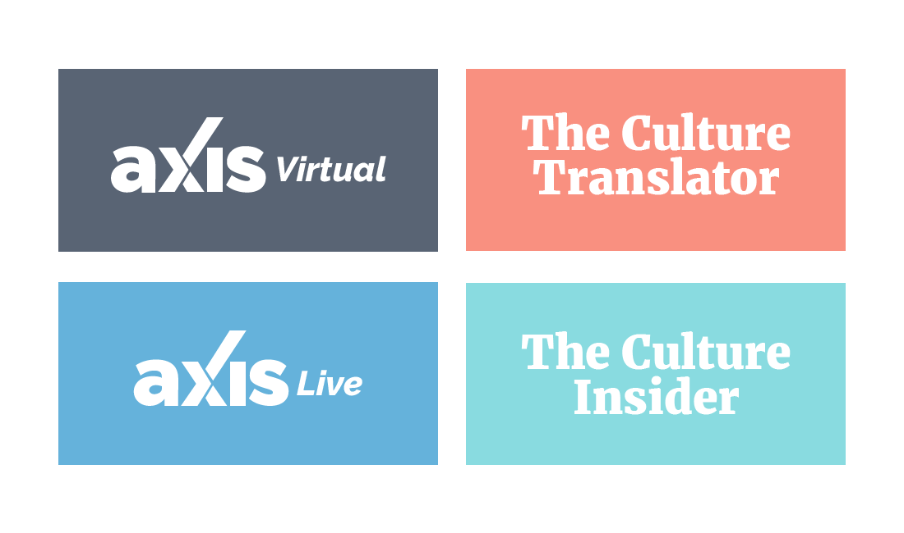
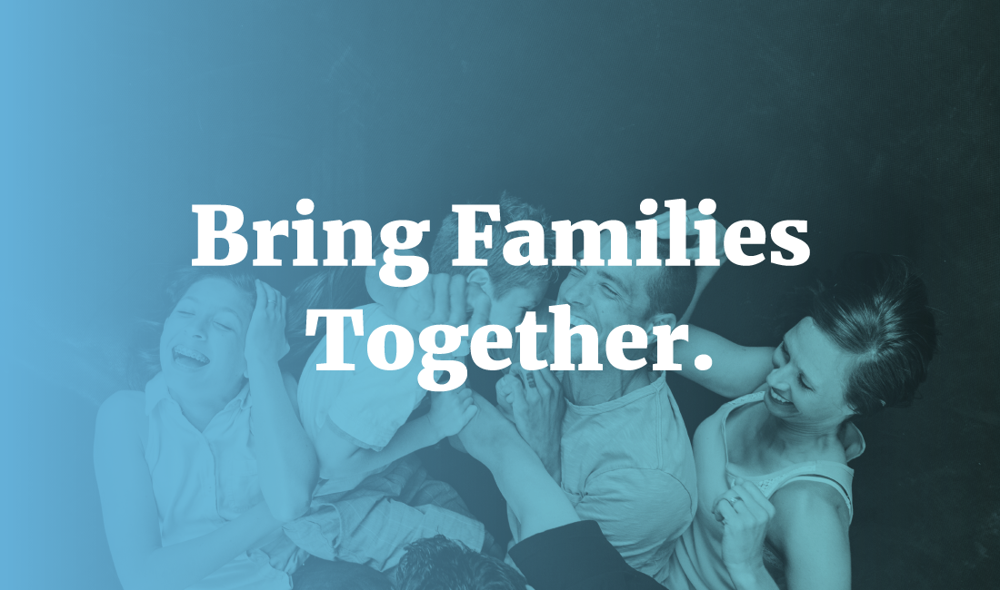
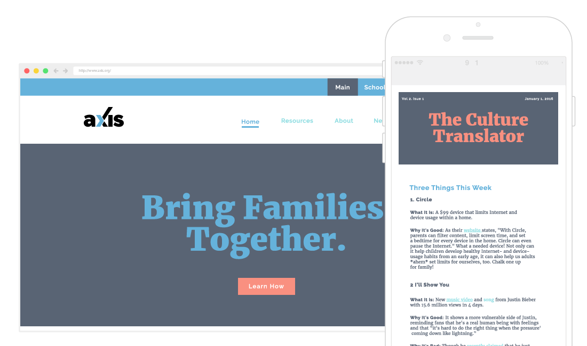
Outcome
Reaction
I’ve been able to gain a small amount of reaction to our new look by sharing it internally, as well as previewing it to a selected group of individuals who work closely with Axis, and so far everything has been extremely positive.
What's Next?
Currently, I’m developing a rollout plan for our new identity. I’m wanting to release it simultaneously across all of our platforms to have a seamless experience for our audience. I’m building out a lot of material and assets for our entire team to have at their disposal. This also includes an update of our website. The existing site was already designed by me about a year ago (early 2015), so a lot of things won’t be changing. The AI will be updated, but most of the work will be overhauling the visual design of it.
Final Thoughts
I’m extremely proud of this work, as I feel like I was able to really hit the mark and accomplish the objectives that were set. I believe this new branding will resonate with students, and compel school administrators and pastors. I’m excited to unveil it and see how it’s received.
Thank you for reading.
— AJ